Kali Nethunter尝鲜
Kali Nethunter渗透测试平台出来也有一段时间了，国内极客们对此工具的态度也褒贬不一。不管怎样，我很早就想体验一下Nethunter了，毕竟能在某些场合用手机做些邪恶的事情~有点Watch Dog的感觉。
安装
机型：Google Nexus 5
Android版本:5.1.1 LMY48l
Nethunter下载地址:https://www.kali.org/kali-linux-nethunter/
首先确保已经root，下载好对应机型的刷机包。
我这里用的recovery是TWRP，在Play Store的TWRP Manager上安装的。也可以自己下载，关机状态按住电源和音量-进入fastboot刷入。
adb_fastboot下载地址
TWRP recovery下载地址
1 | fastboot flash recovery twrp-2.8.7.1-hammerhead.img |
原版的TWRP默认是不挂在System分区的，很多人因为这个安装失败，刷之前记得到Mount挂载System。安装前确保system分区有足够空间，把那些没用的gapps都删了。
kali 的目录在
1 | /data/local/kali-armhf |
当时忘记了TWRP可以截图的。。。。居然找了台手机来拍照
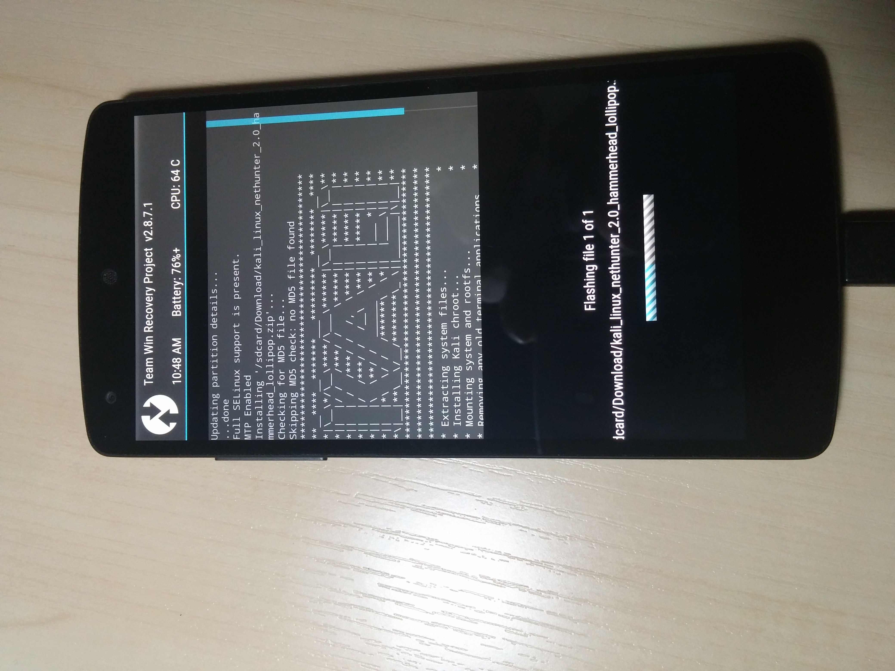
自带第三方应用
开机后的样子：可以看到有八个自带应用
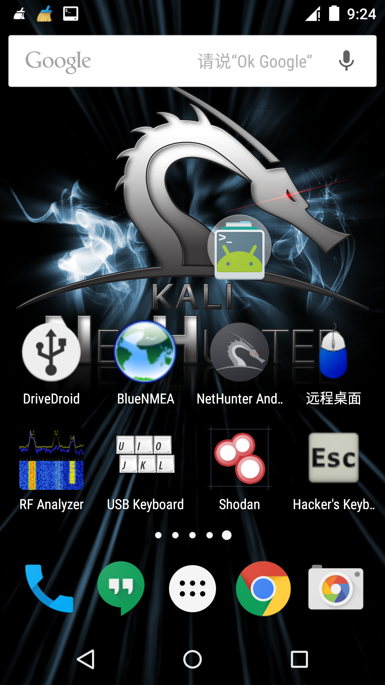
DriveDroid：将手机内镜像模拟为启动盘.
BlueNMEA：是用来获取GPS的NMEA数据，然而在nexus5 lolipop上并不能使用啊喂！
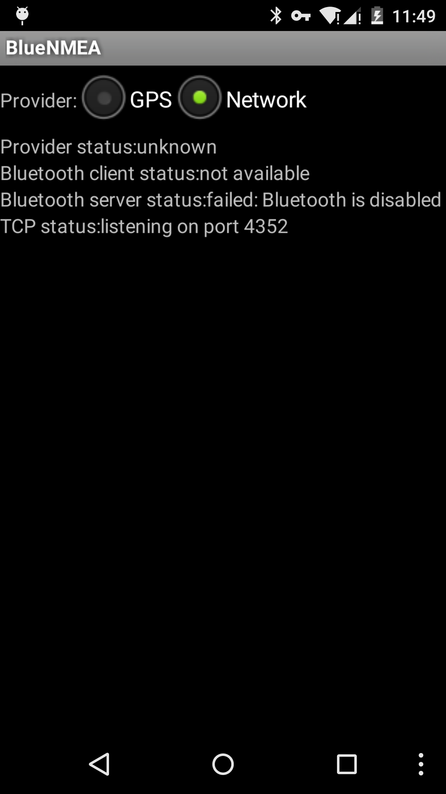
远程桌面：用来连接Windows（怎么又是过时的应用？根本用不了，推荐使用VNC取代，我这里用的是微软的RD Client，没有特殊需要谁会在linux上装VNC服务啊~！）
RF Analyzer：射频分析器，通过连接HackRF，对射频信号进行采样，以FFT瀑布图来显示。
想要了解可以左转 HackRF中文讨论区
以下两张图来自Github
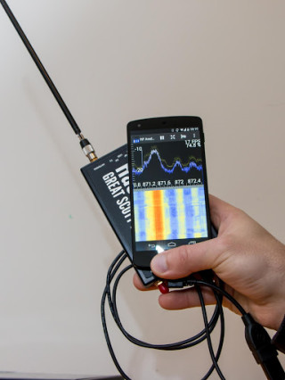
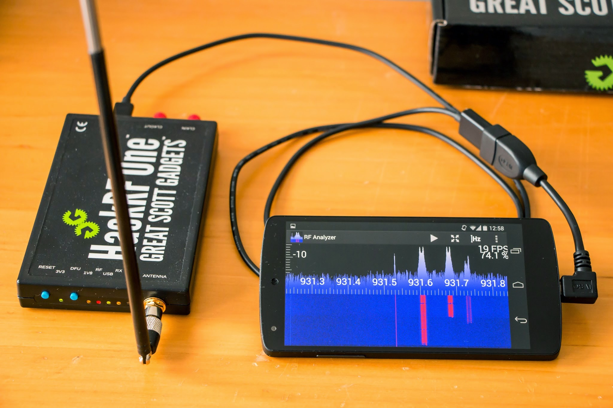
USB Keyboard：顾名思义，用USB来控制电脑当做键盘鼠标使用
Shodan：基于物联网的搜索引擎，需要API Key，在下并没有key
Hacker’s KeyBoard：便于输入各种控制字符
使用Kali
NetHunter Android：这才是主角！
NetHunter Home：可以查看本地的网络接口和外网ip地址
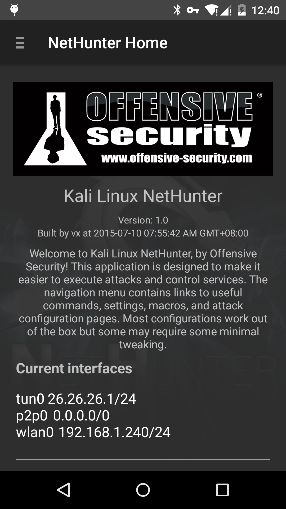
Kali Launcher:方便进行各种操作
1 | LAUNCH KALI SHELL IN TERMINAL 打开Kali shell |
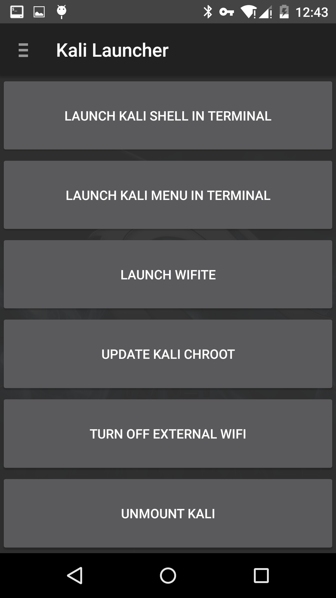
Kali Service Control：这里有许多服务开关
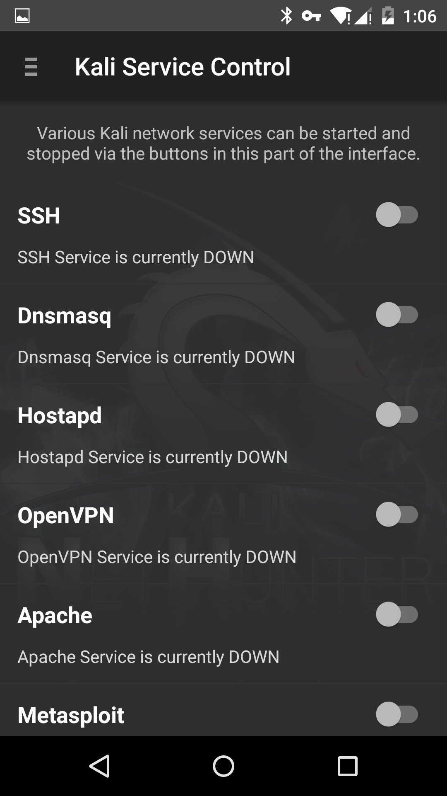
Metasploit：打字非常不方便！不过能正常使用。
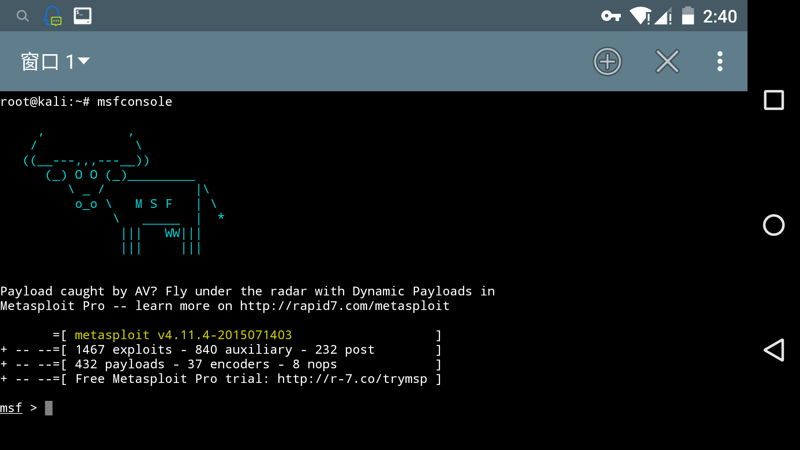
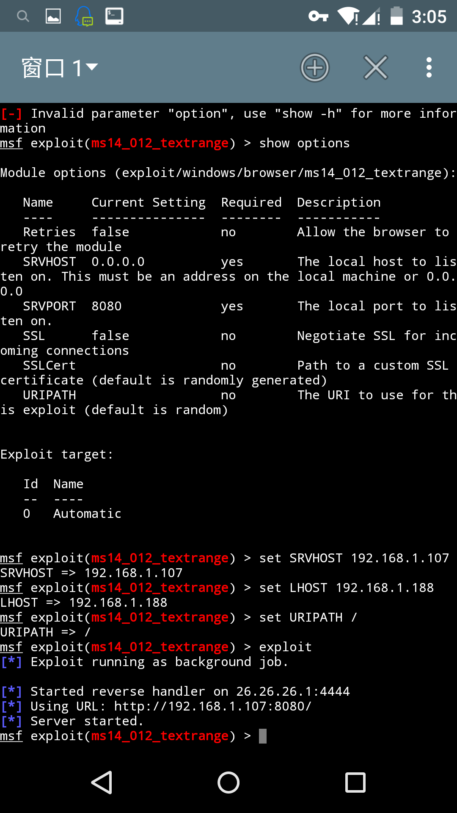
SSH：找到
1 | /data/local/kali-armhf/etc/ssh |
内置无线网卡貌似不支持，需要通过OTG连接外置无线网卡才能使用一系列的无线测试功能。
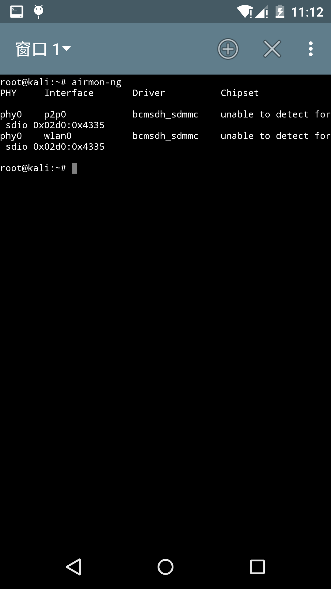
通过体验最终得出结论：玩玩就好，一些功能对于普通玩家来说算是鸡肋吧。其实个人认为最好玩的是开启VNC服务，然后手机安装VNC Viewer，变成桌面操作系统。